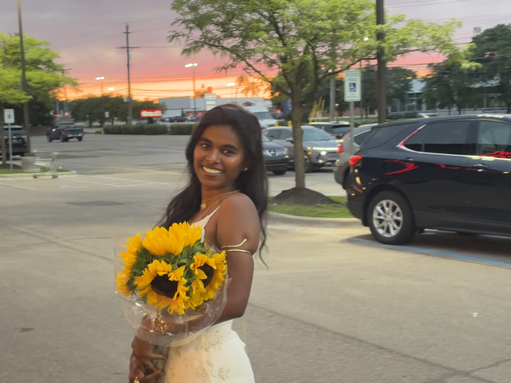

Financial Analyst · Data, Modeling & Automation
Hi, I'm Meghana.
Most people call me Maggi. Yes - like the instant noodles.
I work in Finance - spending an unreasonable amount of time investigating companies, markets. I have a master's in Economics & Finance..
Apart from this I have slightly concerning intersts in things that make my neurons physically change (I put them through hell..):
